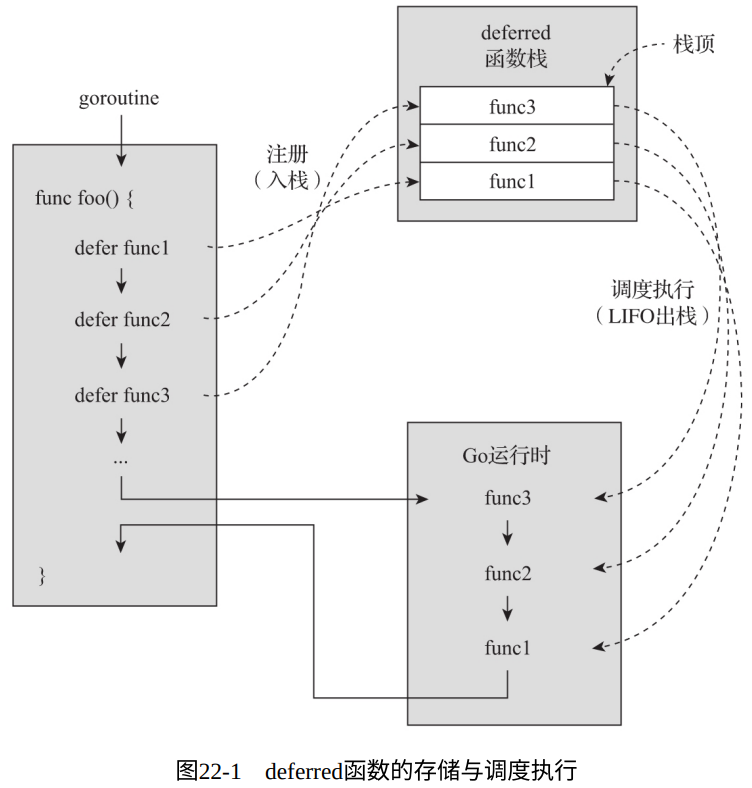

考虑下面的代码：
// chapter4/sources/deferred_func_1.go
func writeToFile(fname string, data []byte, mu *sync.Mutex) error {
mu.Lock()
f, err := os.OpenFile(fname, os.O_RDWR, 0666)
if err != nil {
mu.Unlock()
return err
}
_, err = f.Seek(0, 2)
if err != nil {
f.Close()
mu.Unlock()
return err
}
_, err = f.Write(data)
if err != nil {
f.Close()
mu.Unlock()
return err
}
err = f.Sync()
if err != nil {
f.Close()
mu.Unlock()
return err
}
err = f.Close()
if err != nil {
mu.Unlock()
return err
}
mu.Unlock()
return nil
}
上面的代码代表了一种普遍的问题：由于函数的复杂控制逻辑，可能会存在多个退出后门，那么如果我们想要在退出函数前释放之前申请的一些资源，我们就需要在各处的退出点之前复制一遍代码。
- 显然这不仅增大了源代码体积，还降低了可读性
- 还容易遗漏，大大增加了开发人员的心智负担
- 即使妥善处理了，如果函数被某些panic打断，我们也无法从panic中恢复并释放资源
而这个问题就是Go语言引入defer的初衷
1. defer的运行机制
defer的运作离不开函数：
- 在Go中，只有在函数和方法内部才能使用defer；
- defer关键字后只能接函数或方法（即所谓deferred函数）；
- defer将deferred函数注册到所在goroutine的deferred函数栈中，所有deferred函数将在原函数退出前按LIFO顺序调度执行
改良后的版本：
// chapter4/sources/deferred_func_2.go(这⾥仅列出writeToFile变更后的代码)
func writeToFile(fname string, data []byte, mu *sync.Mutex) error {
mu.Lock()
defer mu.Unlock()
f, err := os.OpenFile(fname, os.O_RDWR, 0666)
if err != nil {
return err
}
defer f.Close()
_, err = f.Seek(0, 2)
if err != nil {
return err
}
_, err = f.Write(data)
if err != nil {
return err
}
return f.Sync()
}

2. defer的常见用法
2.1. 拦截panic
defer的运行机制决定了无论函数是执行到函数体末尾正常返回，还是在函数体中的某个错误处理分支显式调用return返回，抑或函数体内部出现panic，已经注册了的defered函数都会被调度执行
因此我们可以利用defer来拦截panic，并按需要对panic进行处理：
// chapter4/sources/deferred_func_3.go
func bar() {
fmt.Println("raise a panic")
panic(-1)
}
func foo() {
defer func() {
if e := recover(); e != nil {
fmt.Println("recovered from a panic")
}
}()
bar()
}
func main() {
foo()
fmt.Println("main exit normally")
}
$ go run deferred_func_3.go
raise a panic
recovered from a panic
main exit normally
deferred函数虽然可以拦截绝大部分的panic，但无法拦截并恢复一些运行时之外的致命问题。比如下面代码中通过C代码制造的崩溃，defered函数便无能为力
// chapter4/sources/deferred_func_4.go
package main
//#include <stdio.h>
//void crash() {
// int *q = NULL;
// (*q) = 15000;
// printf("%d\n", *q);
//}
import "C"
import (
"fmt"
)
func bar() {
C.crash()
}
func foo() {
defer func() {
if e := recover(); e != nil {
fmt.Println("recovered from a panic:", e)
}
}()
bar()
}
func main() {
foo()
fmt.Println("main exit normally")
}
$ go run deferred_func_4.go
SIGILL: illegal instruction
PC=0x409a7f4 m=0 sigcode=1
goroutine 0 [idle]:
runtime: unknown pc 0x409a7f4
...
2.2. 修改函数的具名返回值
// chapter4/sources/deferred_func_5.go
func foo(a, b int) (x, y int) {
defer func() {
x = x * 5
y = y * 10
}()
x = a + 5
y = b + 6
return
}
func main() {
x, y := foo(1, 2)
fmt.Println("x=", x, "y=", y)
}
$ go run deferred_func_5.go
x= 30 y= 80
2.3. 输出调试信息
典型用法比如：在出入函数时打印留痕日志（一般在调试日志级别下）：
func trace(s string) string {
fmt.Println("entering:", s)
return s
}
func un(s string) {
fmt.Println("leaving:", s)
}
func a() {
defer un(trace("a"))
fmt.Println("in a")
}
func b() {
defer un(trace("b"))
fmt.Println("in b")
a()
}
func main() {
b()
}
entering: b
in b
entering: a
in a
leaving: a
leaving: b
2.4. 还原变量旧值
// $GOROOT/src/syscall/fs_nacl.go
func init() {
oldFsinit := fsinit
defer func() { fsinit = oldFsinit }()
fsinit = func() {}
Mkdir("/dev", 0555)
Mkdir("/tmp", 0777)
mkdev("/dev/null", 0666, openNull)
mkdev("/dev/random", 0444, openRandom)
mkdev("/dev/urandom", 0444, openRandom)
mkdev("/dev/zero", 0666, openZero)
chdirEnv()
}
3. 关于defer的几个关键问题
3.1. 明确哪些函数可以作为deferred函数
- 对于自定义的函数或方法，defer都可以支持，但是返回值会被自动丢弃
- 关于内置函数：append、cap、 len、make、new等内置函数是不可以直接作为deferred函数的，而 close、copy、delete、print、recover等可以
3.2. 把握好defer关键字后表达式的求值时机
defer关键字后面的表达式是在将deferred函数注册到deferred函数栈的时候进行求值的。
// chapter4/sources/deferred_func_7.go
func foo1() {
for i := 0; i <= 3; i++ {
defer fmt.Println(i)
}
}
func foo2() {
for i := 0; i <= 3; i++ {
defer func(n int) {
fmt.Println(n)
}(i)
}
}
func foo3() {
for i := 0; i <= 3; i++ {
defer func() {
fmt.Println(i)
}()
}
}
func main() {
fmt.Println("foo1 result:")
foo1()
fmt.Println("\nfoo2 result:")
foo2()
fmt.Println("\nfoo3 result:")
foo3()
}
foo1 result:
3
2
1
0
foo2 result:
3
2
1
0
foo3 result:
4
4
4
4
3.3. 知晓defer带来的性能损耗
基准性能测试：
// chapter4/sources/defer_perf_benchmark_1_test.go
package defer_test
import "testing"
func sum(max int) int {
total := 0
for i := 0; i < max; i++ {
total += i
}
return total
}
func fooWithDefer() {
defer func() {
sum(10)
}()
}
func fooWithoutDefer() {
sum(10)
}
func BenchmarkFooWithDefer(b *testing.B) {
for i := 0; i < b.N; i++ {
fooWithDefer()
}
}
func BenchmarkFooWithoutDefer(b *testing.B) {
for i := 0; i < b.N; i++ {
fooWithoutDefer()
}
}
// Go 1.12
$ go test -bench . defer_perf_benchmark_1_test.go
goos: darwin
goarch: amd64
BenchmarkFooWithDefer-8 34581608 31.6 ns/op
BenchmarkFooWithoutDefer-8 248793603 4.83 ns/op
PASS
ok command-line-arguments 2.830s
由上可知，使用defer函数的执行时间是没有使用defer函数的7倍左右。
经过Go 1.13和1.14版本后，defer性能提升巨大，已经和不用defer的性能相差很小了